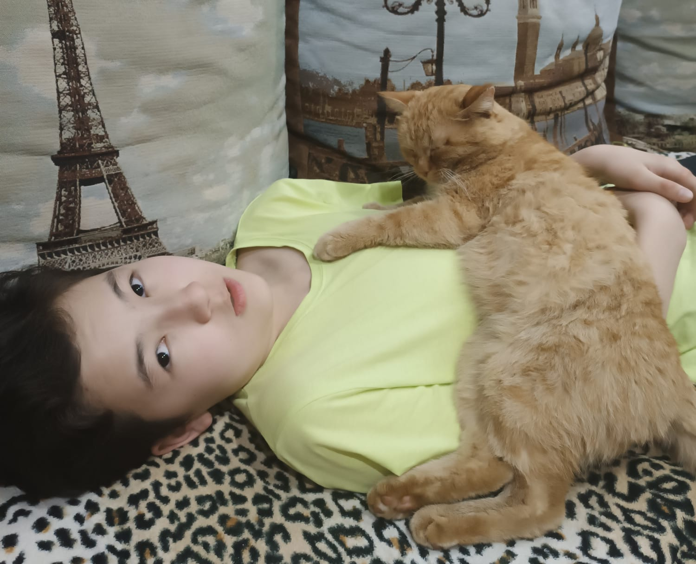
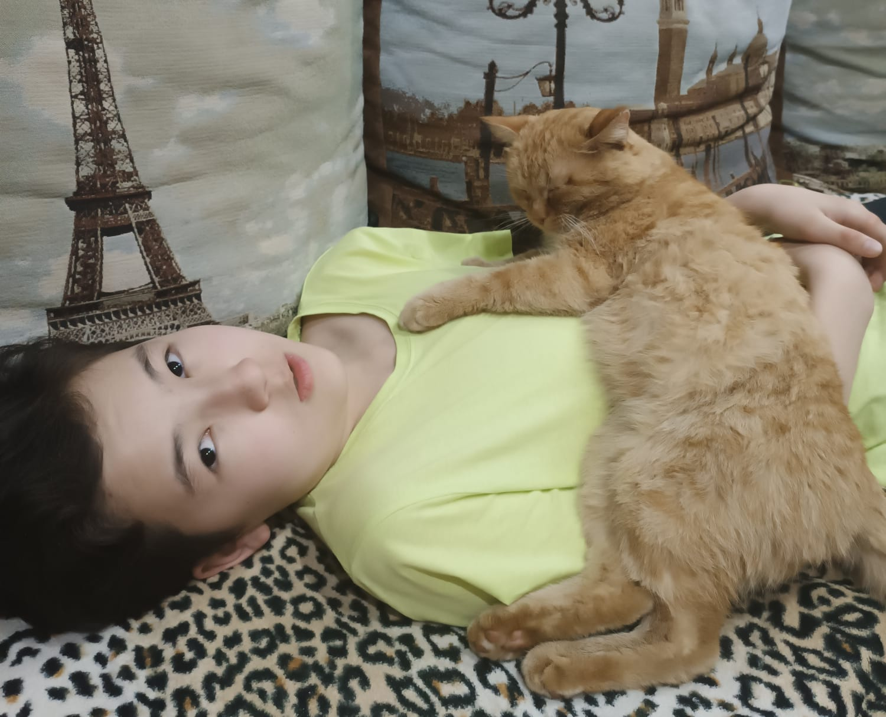
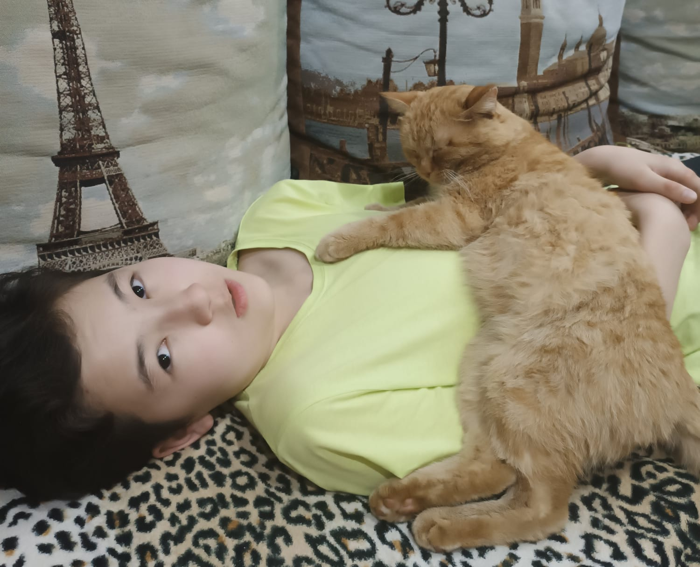
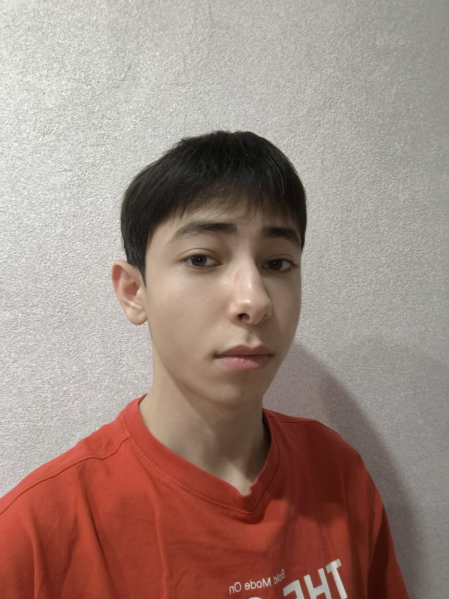
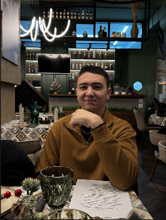
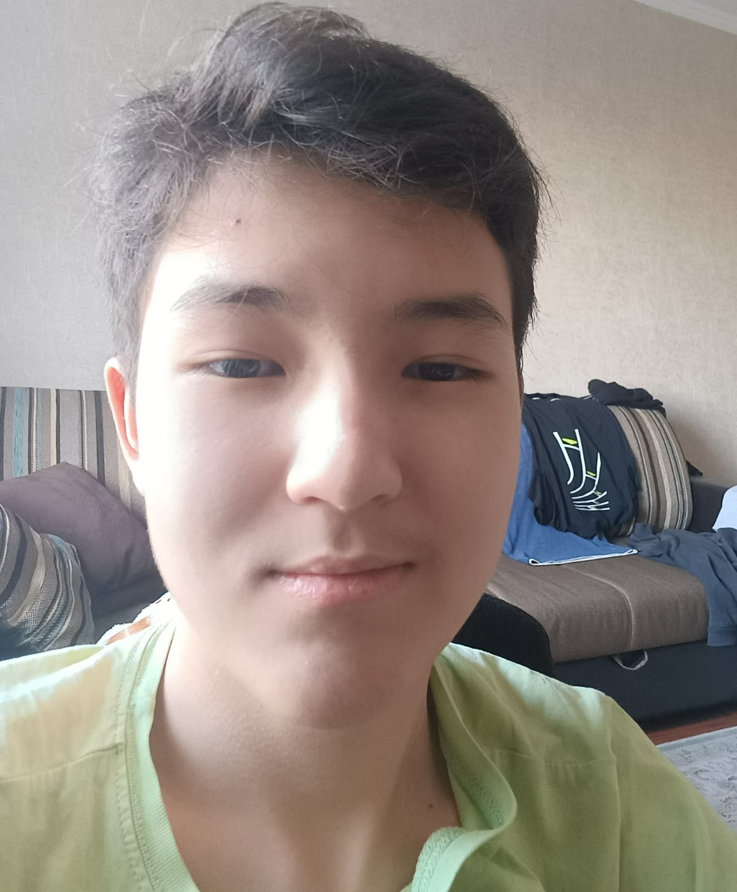

Меня зовут
Оспанов Данияр
Мне 16 лет
На данный момент я учусь в РФМШ в Алмате. Каким-то образом я всё ещё здесь и хочу успешно закончить обучение.

Полное имя: Оспанов Данияр Ернарович
Дата рождения: 07.11.2009
Родной город: ВЕЛИКИЙ КОСТАНАЙ
Я родился в Костанае, когда это был ещё маленький и мрачный город (впрочем, он таким и остался). В детстве я любил пить яблочный сок и играть на площадках. Когда я был маленьким, я уже побывал в Магадане, Новосибирске и Москве, где проходил стоматологическое лечение.
Я никогда не любил зиму и холод, но почему-то меня всегда тянуло к таким местам.
В возрасте 5 лет мы переехали в Алматы. С этого момента моя жизнь сильно изменилась.
После переезда я учился в школе №94, занимался шахматами и играл в настольный теннис.
Человеком, который очень помог мне в шахматах, является ютубер
Леви Розман.

В 12 лет я поступил в РФМШ и учусь здесь до сих пор.
Одним из моих хобби по-прежнему остаются шахматы, но со временем у меня появилась страсть к кулинарии и видеоиграм.
Я неплохо играю в шахматы и видеоигры, но кулинария всё ещё остаётся для меня трудностью.
Любимый фильм: Alien: Romulus
Любимая еда: Лазанья или гуляш

Любимая музыка: Icefield White Knight

Моя любимая игра: Hearts of Iron IV

Мои любимые братья это Алан и Роман, которые помогали мне и поддерживали меня, также я счастлив
что Алан каждый день проводит со мной время, таких братьев не сыщишь на белом свете.
   source code(github)